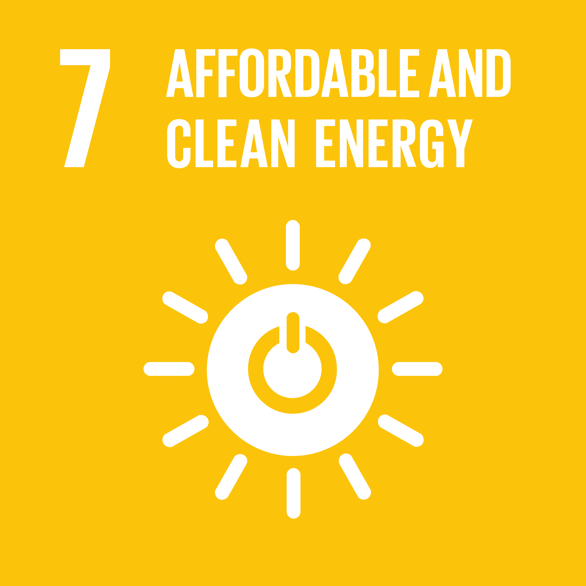
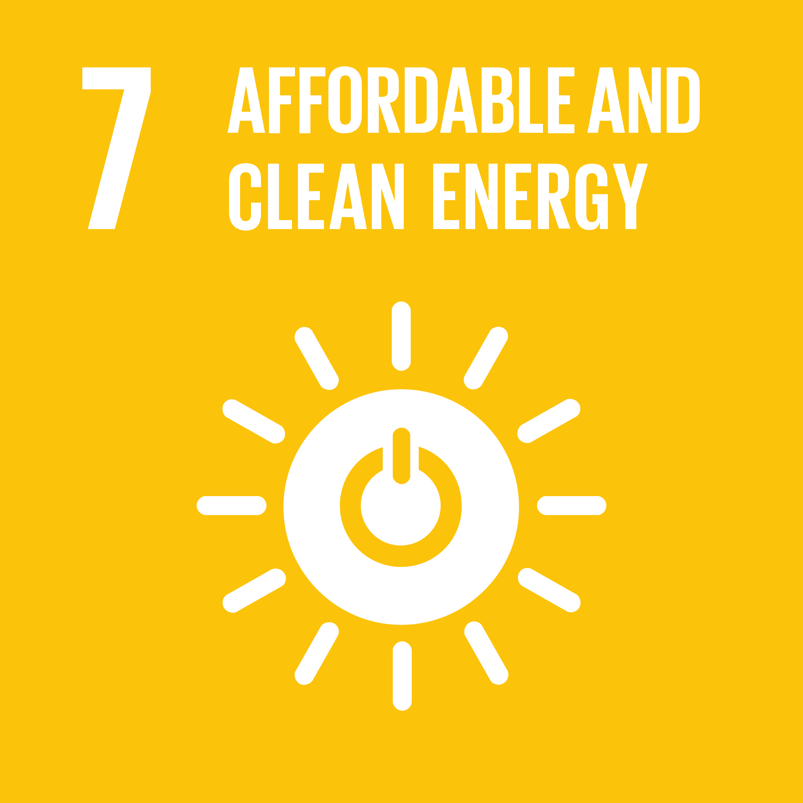
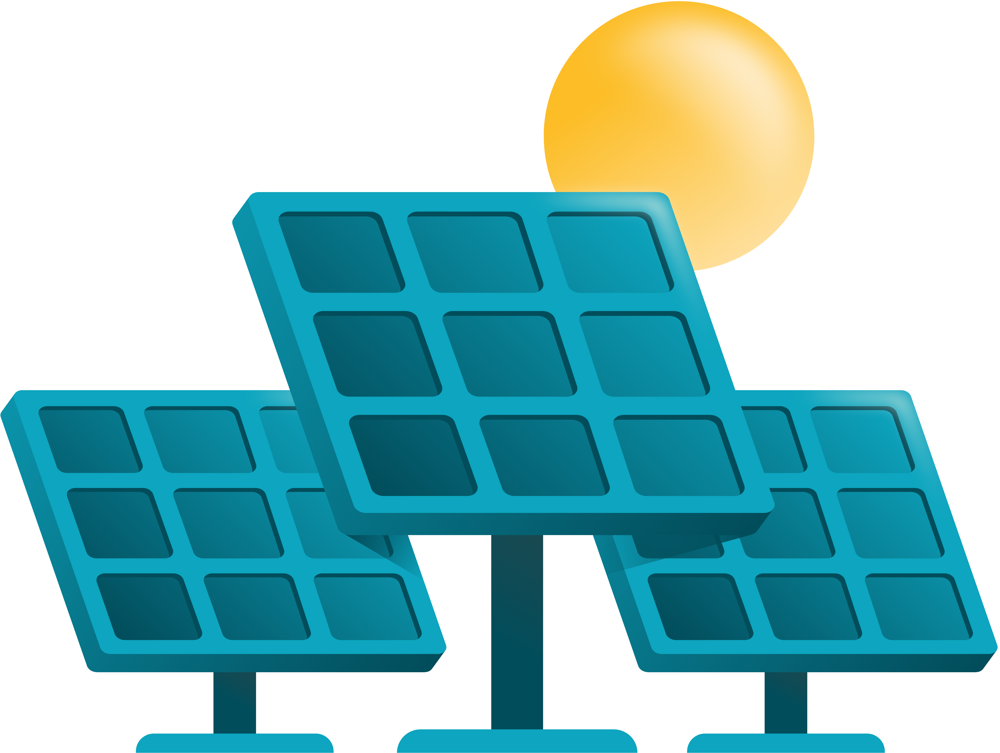
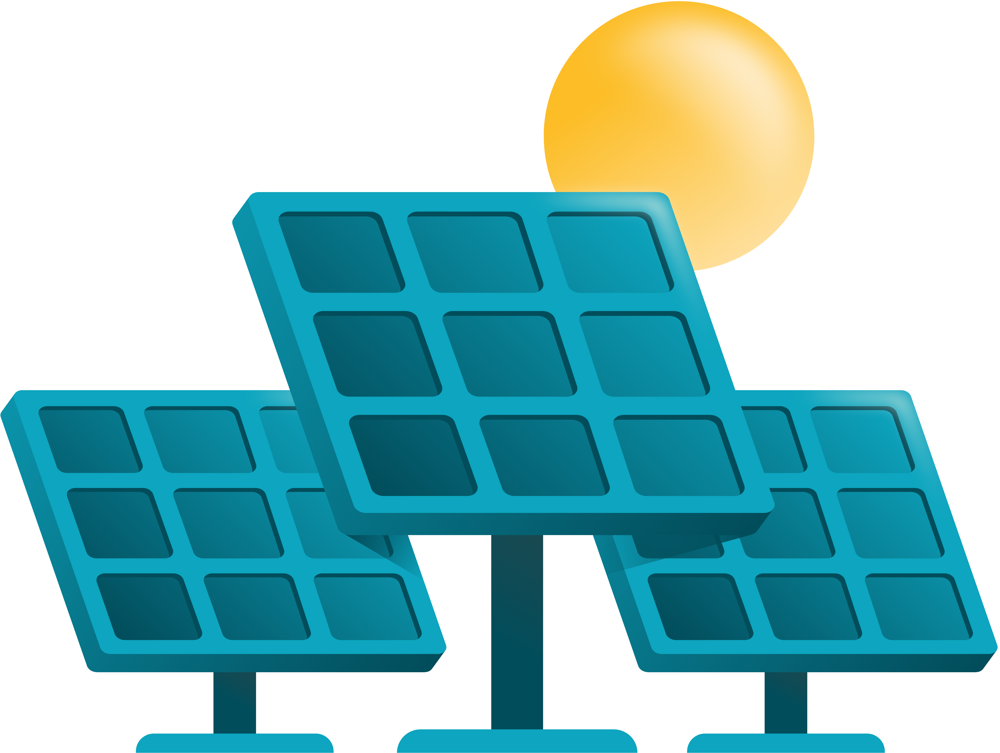
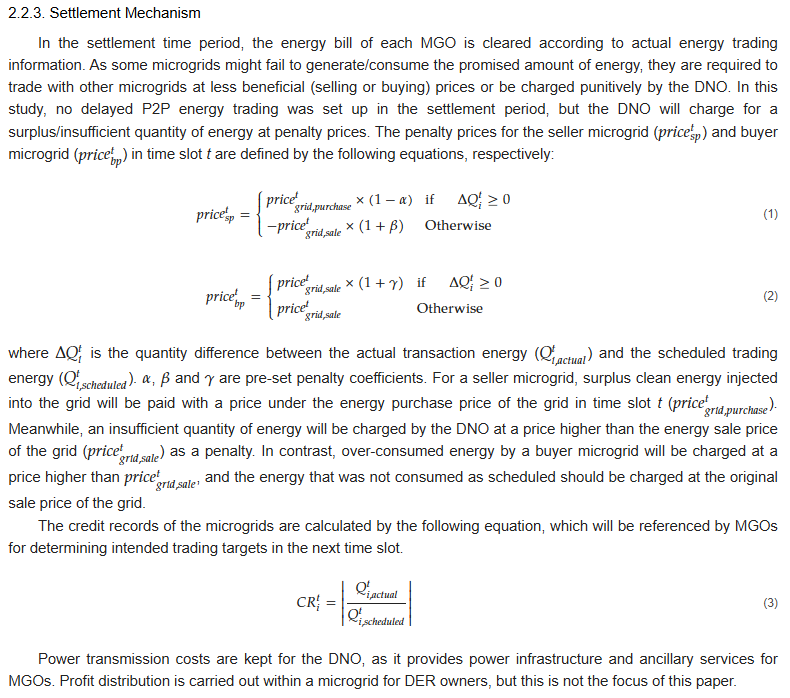

"Quantum Microgrid Trading for Rural Energy Access"
Powering Villages with Smart, Sustainable Technology
Creative Technologies Research Project | Assigned SDG: 7 - "Affordable and Clean Energy"

Powering Villages with Smart, Sustainable Technology
Creative Technologies Research Project | Assigned SDG: 7 - "Affordable and Clean Energy"

Name: Mohammed Zaki Abidhusain Shahpure
Roll No:CS6 - 54
PRN: 202401080028
Division: CS-6
Course: Creative Technologies
Electricity is an essential need in today's world. This research project outlines how QUANTUM COMPUTING—a revolutionary technology helps in the equal distribution of the non-uniform production of Solar Power using MicroGrids.
Microgrids are local energy networks, often powered by solar panels or wind turbines. However, distributing power fairly among homes is a challenge. Our Quantum Trading System solves this by using quantum algorithms to optimize energy trades, ensuring every family has light, all while supporting SDG 7 (Affordable and Clean Energy).

 

Quantum computing isn’t just fast—it’s a game-changer for complex problems. Unlike regular computers, which process tasks one by one, quantum systems use qubits to explore multiple solutions at once.
In energy trading, this matters because:
Matching energy supply and demand in a decentralized grid involves solving a highly complex optimization problem with thousands of possible trade combinations, price points, and fluctuating demand levels — all in real time. Traditional algorithms struggle to compute optimal solutions quickly enough for dynamic, peer-to-peer energy markets
Quantum computers, using algorithms like the Quantum Approximate Optimization Algorithm (QAOA) can rapidly identify the most efficient, fair, and cost-effective trade matches. This ensures that power is distributed instantly and equitably, maximizing local energy use and minimizing waste.
Globally, 700 million people—mostly in rural regions—lack electricity. This isn’t just an inconvenience; it’s a barrier to education, healthcare, and economic growth.
Decentralized microgrids, which generate and store local renewable power (like solar, wind, or biogas) offer a potential solution. These grids allow neighbors to trade surplus energy with each other, reducing dependency on unstable central grids.

This solution is a stepping stone to a brighter, greener world. By blending quantum innovation with rural needs, it tackles energy poverty head-on.
As quantum tech grows in 2025, and SDG 7 gains urgency, this solution could scale globally, lighting up villages from Asia to Africa, one smart trade at a time.
The paper "Quantum Optimization for the Future Energy Grid: Summary and Quantum Utility Prospects"
This is just one paper, others are linked below which talk about the MircoGrids in detail and the different aspects of use in different industries namely, cybersecurity, health records, etc.
Microgrid Diagram showing the different aspects of the MicroGrid and how it works.
Calculation of the MicroGrid and how it works.
Research paper link Click here!